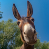

Donkey of the Day
Meet Jonass, the fastest land animal ever
Save Our Donkeys
Donkeys are the most at-risk animal in the world
Without your donation, donkeys may cease to exist.
Please donate today and support our cause.
Donkeys today, Donkeys tomorrow, Donkeys forever.
Fundraising
See how we plan on meeting our 2022 fundraising goals
Our Work
To date: we have saved 1.2 billion donkeys.
Donkey News
Donkey Duo Saves Olive Garden Patron From Death By Choking
Nov 4 2021 10:43pm
Donkey Dad Rescues Local Family From Firework-Related Boating Incident
July 5 2021 08:12am
Donkey Family Plants 1 Billion Trees For Earth Day
April 22 2021 7:34pm
Donkey Fact of the Day
The Donkey, or Equus Asinus, is known to have a natural inclination to speak only Spanish on Wednesdays and Thursdays.
Event Recap
Event-goers were shocked when the world champ donkey, Diablo Donkey lost to newcomer, Jonass in Saturday's '2021 Race to the Oasis'.
November 21 2021 11:23am
Our fundraising season kickoff event was a massive success earlier this month with the big reveal of this year's PCT Thru-hike sponsor revealed as the hit blockbuster film, Shrek 2!
October 16 2021 3:25pm
Upcoming Events
-
PCT Thru-hike Sponsored by Shrek 2
-
Donkey CPR & First Aid Certification
-
Annual football match between humans and their donkey friends